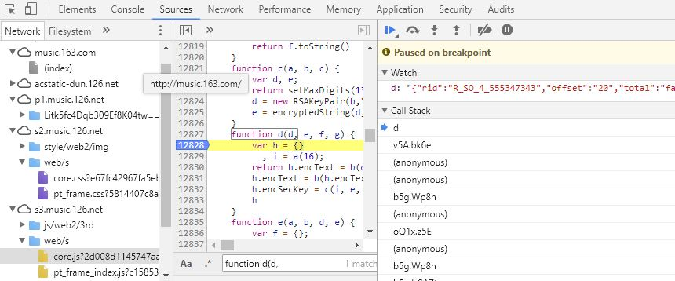

如果好奇一个人在网易云音乐评论里说过什么的话，爬取所有歌单里歌曲的评论是个可行的方案，毕竟世界是属于我们程序员的。所以拾起Python，大概过了一遍Scrapy的教程，写了个简陋的爬虫，目前还有一些小问题，等好好研究研究再修复，这里记一下这个过程里遇到的坑。
运行环境
感觉Scrapy的运行环境在windows上安装起来极度不友好，所以在服务器上果断换成用Anaconda了。同时因为评论太多了，比方像《晴天》这样火爆的一首歌现在评论就有200W+了，要想以后充分利用爬取的数据，数据库是必须的，所以用了Mysql数据库。注意要用5.6及以上的版本，因为从5.6开始Mysql支持utf8mb4编码，简单来说就是扩充了原有的utf8编码，增加了对emoji表情等的编码，而评论里是可能会有表情的。
程序逻辑
因为使用了Scrapy框架，程序也就符合Scrapy的流程了。最简单的爬取就是发出请求然后处理响应，而用Scrapy的话这些统一由它的引擎管理，还可以在这个交互过程里根据需求加一些中间件、设置数据导出方式等。爬虫里因为需要插入数据库，所以在数据导出的地方用twisted实现了异步向数据库插入数据的接口，同时因为网易云的反爬虫机制，只使用本地IP的话，爬一会儿能有个几十万条数据就会失去响应了。所以写了一个利用动态代理的中间件(一开始还写了个爬取免费代理的爬虫，但是代理存活率太低了，所以暂时放弃)，动态代理其实就是维护了一批时效性很高的可用代理，等后续可以研究下怎么自己实现一个，当然twisted也要好好研究下。
接口获取
现在好像都流行MVVM架构了，所以获取网易云音乐的数据都是通过接口获取Json格式的数据。像网址都是像这样的：http://music.163.com/weapi/v1/resource/comments/R_SO_4_555347343，但是请求参数都是加密的。从知乎上看到说有不加密的请求地址，所以可以构造像这样的不加密的连接http://music.163.com/api/v1/resource/comments/R_SO_4_555347343然后在js里加断点找出明文的参数一起放在请求里：

用户信息，歌单信息，评论信息都这样获取参数然后构造请求就可以了。
项目地址
最后放下目前的程序吧，存在的问题什么的可以看项目的ReadMe。
https://github.com/crazyprobe/netease_music_comments_spider